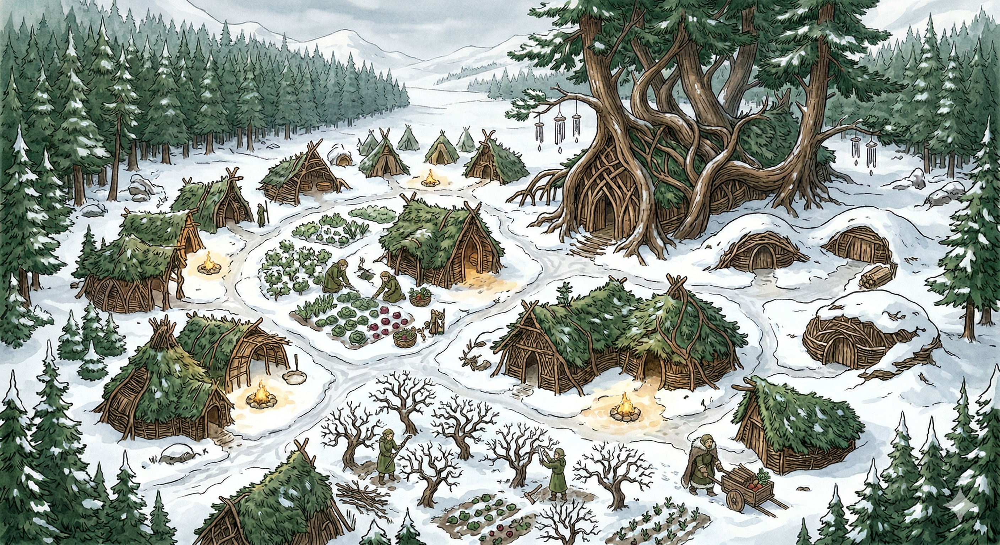

Expansive fields and well-tended gardens greet you, painting a picture of peace and prosperity. The village is nestled among gentle hills and dense forests, with snow-covered trees adding winter magic to the landscape.
Overview
A tranquil agricultural village in the heart of the Silverleaf Lands. The elves here practice sustainable farming and live in harmony with nature. Known for lush fields, verdant gardens, and a strong sense of community.
Notable Figures
- Elder Aeloria Greenleaf — village elder, oversees well-being of inhabitants
- Farmer Elandor Sunshadow — agriculture expert, jovial and hardworking
- Herbalist Thalia Moonwhisper — remedies and potions
Shops & Services
- Rhorin Ironroot — blacksmith, tools and farming equipment
- Elara Starbloom — magic merchant, enchantments for agriculture and protection
- Stardew Provisions (Liora Sunleaf) — general goods and supplies
Adventurers Guild
Guildmaster Alaric Greenheart runs the Stardew chapter. Quest postings, lodging, and training available.